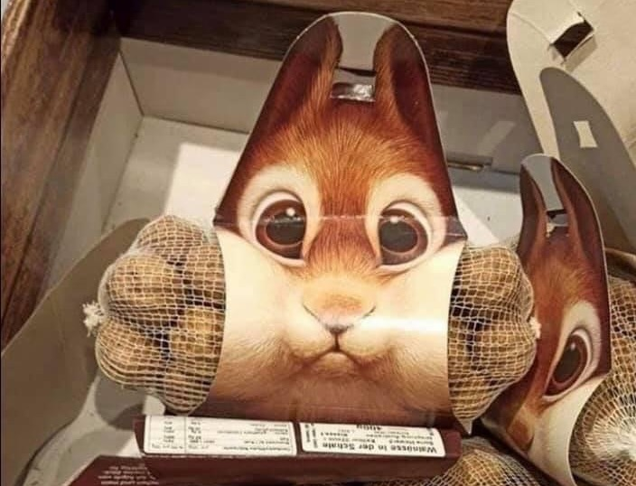

SIDHUVUD
TEST
SIDHUVUD
TESTValnöt (Juglans regia) är en art inom familjen valnötsväxter. Valnöt odlas ibland i de södra delarna av Sverige. Arten kan växa även i Mellansverige, men där mognar sällan dess frukter och trädet skadas ofta av vinterkölden
Ekorre (Sciurus vulgaris), även känd som röd ekorre eller europeisk ekorre, är en trädlevande gnagare med yvig svans som förekommer i Palearktis.
